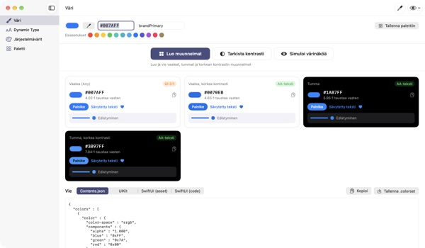
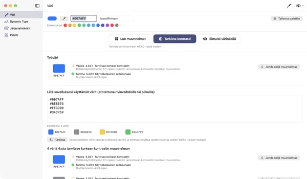
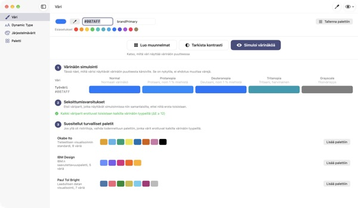
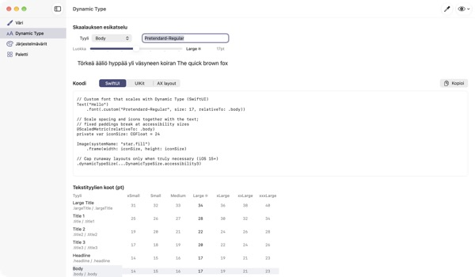

Yksi väri sisään,
neljä ulkoasua ulos
Järjestelmävärit mukautuvat itse tummaan tilaan ja Lisää kontrastia -asetukseen. Brändivärisi eivät. TetraTint ottaa yhden vaalean tilan värin, tekee siitä versiot Vaalea, Vaalea korkea kontrasti, Tumma ja Tumma korkea kontrasti ja vie ne suoraan Xcodeen.
Kaikki ominaisuudet ovat ilmaisia. Vaatii macOS 14:n tai uudemman.

Kokeile brändiväriäsi
Liitä hex-arvo tai napauta esiasetusta. Samalla laskulla kuin apissa näet heti kaikki neljä versiota ja niiden kontrastin.
Onko brändivärisi hukkunut tummassa tilassa?
Vaaleassa tilassa valittu sininen näyttää mustalla sameelta, ja Lisää kontrastia -asetusta käyttävä tuskin saa tekstistä selvää. Värin etsiminen jokaiseen ulkoasuun ja kontrastin laskeminen käsin vie puoli päivää. TetraTint johtaa versiot samaan tapaan kuin järjestelmävärit muuttuvat ulkoasujen välillä ja näyttää heti, läpäiseekö kukin.
Tarkista kaikki käyttämäsi värit kerralla
Liitä apin koko hex-lista, ja jokainen väri luokitellaan: käyttökelpoinen sellaisenaan, tarvitsee korkean kontrastin tai vain koristeluun.
Yksi klikkaus tekee ongelmavärista neljä versiota palettiisi. Siitä on apua myös App Storen saavutettavuusmerkinnän Riittävä kontrasti valmisteluun.

Katso värisokean silmin
Näe paletti protanopiana, deuteranopiana, tritanopiana ja harmaasävynä, ja saat varoituksen pareista, joita on vaikea erottaa.
Tuo värisokeille sopivat paletit Okabe–Ito, IBM ja Paul Tol yhdellä klikkauksella, tai näe koko appi samoin oikean yläkulman silmäpainikkeella.

Omat fontit seuraavat tekstikokoa
Näe kaikki 11 tekstityyliä 7 koossa ja liu'uta säädintä nähdäksesi todelliset koot.
Syötä fontin PostScript-nimi, niin saat koodin UIKitille, SwiftUI:lle ja @ScaledMetricille sekä koodin, joka vaihtaa asettelua suurella tekstillä.

Kolme askelta alkuun
- 1
Anna perusväri
Liitä hex, poimi väri pipetillä mistä tahansa näytöltä tai valitse esiasetus.
- 2
Tarkista neljä versiota
Katso kontrastimerkit ja hio brändiin sopimattomat versiot värinvalitsimella.
- 3
Vie Xcodeen
Kopioi tai tallenna Contents.json-, .colorset- tai UIKit- ja SwiftUI-koodina.
Miten versiot syntyvät ja mitä merkit tarkoittavat
- Vaalea (Any)
- Värisi sellaisenaan
- Vaalea, korkea kontrasti
- Hieman kylläisempi ja tummennettu, kunnes valkoista vasten 4.5:1
- Tumma
- Hieman vaaleampi ja kirkkaampi (vaaleus +5, kylläisyys +3)
- Tumma, korkea kontrasti
- Vaalennettu, kunnes mustaa vasten 7:1
- AA-teksti
- Vähintään 4.5:1 taustaa vasten, sopii leipätekstiin
- UI 3:1
- Vähintään 3:1, riittää painikkeisiin ja kuvakkeisiin mutta ei tekstiin
- Matala
- Alle 3:1, älä käytä tekstiin, kuvakkeisiin tai tiloihin
- Vienti
- Contents.json · .colorset · UIKit · SwiftUI, tai koko paletti yhtenä .xcassets-tiedostona
Järjestelmävärien viitearvot ovat Applen Human Interface Guidelinesista ja voivat muuttua käyttöjärjestelmäpäivitysten myötä. Käytä julkaistussa apissa järjestelmävärien rajapintoja.
Usein kysyttyä
Onko se todella ilmainen?
On. Kaikki ominaisuudet ovat ilmaisia, eikä tiliä tai mainoksia ole. Jos appi auttoi, voit antaa juomarahaa asetuksista; se ei avaa mitään lisää.
Luodut versiot eivät sovi brändiimme.
Säädä mitä tahansa versiota sen kortin värinvalitsimella. Luo kaikki uudelleen hylkää käsin tehdyt muutokset ja johtaa kaiken uudelleen perusväristä.
Miten versiot lasketaan?
Ne seuraavat sitä, miten Applen järjestelmävärit oikeasti muuttuvat ulkoasujen välillä: tummassa hieman vaaleampi ja kirkkaampi, vaaleassa korkeassa kontrastissa vähintään 4.5:1 valkoista vasten ja tummassa korkeassa kontrastissa vähintään 7:1 mustaa vasten.
Mitä värinäön simuloinnin varoitus tarkoittaa?
Sitä, että simuloinnissa kahden värin ero (ΔE) laskee alle 12:n ja niitä on vaikea erottaa. Älä nojaa pelkkään väriin: lisää kuvakkeita, kuvioita tai tekstejä tai vaihda värisokeille sopivaan palettiin.
Miten saan oman fontin tukemaan Dynamic Typea?
Syötä Dynamic Type -näkymässä fontin PostScript-nimi ja valitse tyyli, niin saat UIKit-, SwiftUI- ja @ScaledMetric-koodin. Saavutettavuuskoissa Body kasvaa yli kolminkertaiseksi, joten vältä kiinteitä korkeuksia ja lineLimit(1):tä.
Viedyt värit näyttävät erilaisilta kuin apin järjestelmävärit.
Viitearvot ovat Human Interface Guidelinesista ja voivat vaihdella käyttöjärjestelmäversioiden välillä. Käytä järjestelmäväreihin aina UIColor- tai Color-rajapintaa.
Mihin palettini tallennetaan?
Vain Maciisi. Mitään ei synkronoida pilveen eikä lähetetä minnekään. Lisätietoja tietosuojakäytännöstä.
Tallentuuko pipetillä poimittu väri?
Ei. Vain valitun kohdan värin arvo luetaan ja otetaan työväriksi. Näytön kuvaa ei tallenneta eikä lähetetä.
Millä Maceilla appi toimii?
macOS 14:llä (Sonoma) ja uudemmilla. Viennissä valitset itse, minne tiedostot tallennetaan.
Virheitä, ideoita tai kysyttävää? Kirjoita osoitteeseen leeo@kakao.com. Vastaamme yleensä 2–3 päivän kuluessa.